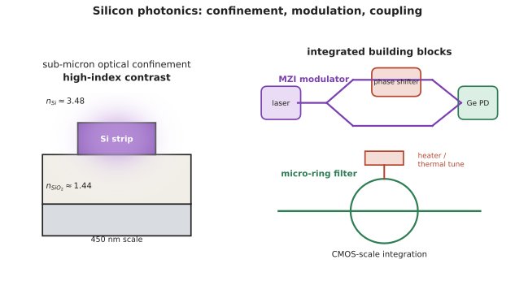

本页目录
应用 I · 集成光子与硅光
层次：研究生方向 + 业界热点 ｜ 核对于 2026-07 ｜ 🔗 与微电子站第十八页互补：那里从芯片互连的角度概述，这里从光学与器件的角度展开。 集成光子学的目标很直白：把桌面上的一整套光学系统做到一块芯片上，从而获得半导体产业的成本曲线与规模。本页讲清它的元件、它的根本困难，以及它现在真正落地的地方。
学习层：省下来的面积，可能被温控回路吃掉
1. 具体谜题：微环为何紧凑，却对几度温漂不耐受？
片上微环在 \(1550\,\mathrm{nm}\)、有效折射率 \(n_{eff}=2.4\)、\(Q=10{,}000\) 下工作。硅的热光系数取
升高 \(3\,\mathrm K\) 会把谐振波长推移约 \(0.35\,\mathrm{nm}\)，而线宽 \(\lambda/Q\) 只有约 \(0.155\,\mathrm{nm}\)。你先猜：此时微环的通道还在峰上吗？同样温度变化放在毫米级 MZI 上，应该读作“窄带失锁”还是“相位慢慢漂移”？
2. 先预测：面积、稳定性和耦合一起判断
- \(\Delta\lambda/\Delta T\) 与 \(dn/dT\)、\(\lambda\)、\(n_{eff}\) 的关系是什么？
- \(Q\) 提高会让微环更抗漂移，还是让同样的漂移跨过更多线宽？
- 为什么 MZI 更大，却常被选作温度更宽容的调制器？把光纤 10 \(\mu\)m 模场喂进 0.5 \(\mu\)m 波导时，封装又增加了哪一项损失？
3. 最小模型：谐振是相位闭合，MZI 是相位差
微环的共振条件是
MZI 则由两臂相位差决定输出，温度扰动先改变
微环把相位变化压缩成高 Q 的窄带判决，因而小、快、需要锁波；MZI 用更长的干涉臂换取更宽的工作窗口。两者都受热影响，但“跨过一个线宽”与“相位移动多少弧度”是不同的失效账本。
4. 实验：先选器件，再揭示热漂移与耦合账本
在核对预测前，结果面板与谐振曲线保持隐藏。核对后可调温差、\(Q\)、MZI 臂长与模式耦合，SVG 同时画出微环 Lorentzian 响应、MZI 相位状态和光纤到波导的尺寸对比。
无 JavaScript 时的静态读法：默认 \(\lambda=1550\,\mathrm{nm}\)、\(n_{eff}=2.4\)、\(Q=10{,}000\)、\(\Delta T=3\,\mathrm K\)。
| 量 | 计算 | 默认结果 | 工程含义 |
|---|---|---|---|
| 谐振漂移 | \(\lambda(dn/dT)\Delta T/n_{eff}\) | \(0.35\,\mathrm{nm}\) | 超过约 \(0.155\,\mathrm{nm}\) 线宽 |
| 微环线宽 | \(\lambda/Q\) | \(0.155\,\mathrm{nm}\) | 需要锁波或闭环控温 |
| 1 mm MZI 相位漂移 | \(2\pi L(dn/dT)\Delta T/\lambda\) | \(2.19\,\mathrm{rad}\) | 相位变化可校准，但不等同于窄带失锁 |
| 模场尺寸比 | \(10/0.5\) | \(20\) 倍 | 光纤到芯片耦合是封装难题 |
5. 失败边界：高折射率差不是单向优势
- 强约束降低弯曲半径，却放大侧壁粗糙散射、偏振敏感与热光漂移。
- “硅光低成本”不能跳过外置光源、锗探测器、光纤耦合和测试；硅的间接带隙仍决定光源要异质集成或外置。
- 微环与 MZI 的比较依赖通道数、带宽、温度范围和控制功耗；不存在脱离规格的唯一优胜者。
6. 迁移任务：写一份片上链路的材料分工表
为 1000 个通道的片上互连选择 SOI、SiN、TFLN 和 InP 的分工，至少列出光源、调制、低损耗路由和探测四栏。再为微环控制回路预算“每多一个器件就增加的监测与加热负担”，说明何时应改用 MZI 或异质集成。

一、为什么是硅
硅光的核心吸引力是"借用 CMOS 产线"：
- 成熟的工艺、大晶圆、高良率、低成本；
- 可与电子电路单片或近距集成。
物理上的适配：
- 硅在通信波长（1310/1550 nm）透明（带隙 1.12 eV → 吸收截止约 1.1 μm，第八页）；
- 硅（\(n\approx3.48\)）与 SiO₂（\(n\approx1.44\)）折射率差极大 → 超强的光场约束 → 波导可以做到亚微米截面、弯曲半径小到几微米。
这个"高折射率差"是硅光集成密度的根本来源——相比之下，铌酸锂或二氧化硅波导的弯曲半径要大几个数量级。
代价：强约束也意味着对侧壁粗糙度极敏感（散射损耗）、偏振敏感、以及热光系数大（温度稍变，谐振波长就漂移）。
二、基本元件
| 元件 | 实现 | 用途 |
|---|---|---|
| 波导 | 硅条 / 脊形 | 传输，损耗约 1–3 dB/cm（远高于光纤，但片上距离短） |
| 耦合器 | 定向耦合器、MMI | 分光、合光 |
| 微环谐振器 | 环形波导 | 滤波、调制、传感；结构紧凑但热敏感 |
| MZI | 马赫-曾德尔（第三页） | 调制、开关；比微环更耐温漂但更大 |
| 光栅耦合器 / 端面耦合 | — | 与光纤对接——这是硅光最大的实际难题之一 |
| AWG | 阵列波导 | 波分复用 |
耦合难题值得单独说：光纤模场直径约 10 μm，硅波导截面约 0.5 μm——尺寸相差二十倍。
- 光栅耦合器：垂直耦合、可晶圆级测试，但带宽窄、偏振敏感、损耗较大；
- 端面耦合 + 模斑转换器：损耗低、带宽宽，但需要精密对准与端面处理。
耦合损耗与封装对准是硅光成本的主要来源之一——芯片本身便宜，把光"喂进去"很贵。这与 🔗 微电子站"设计便宜、封装与测试贵"的趋势一致。
三、三个关键有源器件
① 调制器——这是硅光最巧妙也最受限的地方。
硅没有二阶非线性（中心对称，第十四页）→ 不能用普通的电光效应。只能用等离子体色散效应：注入或耗尽载流子改变折射率与吸收。
- 载流子耗尽型（反偏 pn 结）：快（几十 GHz），但折射率变化极小 → 需要长的相互作用长度（MZI 臂长可达毫米级）或高 Q 谐振增强（微环，但温度敏感）；
- 载流子注入型：效率高但慢（受载流子寿命限制）。
权衡很尖锐：MZI 调制器大而稳，微环调制器小而娇（需闭环控温）。这个选择至今没有唯一答案。
替代路线：
- 薄膜铌酸锂（TFLN）：有真正的电光效应，带宽极高、驱动电压低、损耗小。近年发展迅速，被视为高端调制器的重要方向；
- 异质集成的 III-V 或 Ge 电吸收调制器（EAM）：紧凑高效。
② 探测器：硅在 1550 nm 透明 → 必须集成锗（第八、九页）。锗-硅外延已是成熟工艺，这是硅光少数"已经解决"的问题。
③ 光源——这是硅光最根本的障碍（第八页：硅是间接带隙，不发光）。
三条路线：
- 外置激光器：最成熟，但增加封装成本与耦合损耗；
- III-V 晶圆键合/微转印：把 InP 芯片键合到硅上再加工，已有商用；
- III-V 直接外延生长在硅上：晶格失配导致高缺陷密度，量子点激光器对缺陷更耐受，是活跃方向【前沿】。
"硅不发光"这条第八页的能带事实，至今塑造着整个产业的技术路线。
四、热：一个绕不开的问题
硅的热光系数大（\(dn/dT \approx 1.8\times10^{-4}/\mathrm{K}\)）：
- 微环的谐振波长随温度显著漂移 → 必须闭环控温或波长锁定（加热器 + 监控光电二极管 + 控制回路）；
- 这本身就是一个控制系统（🔗 自动化站）——芯片里跑着数十个温控回路，其功耗与复杂度是硅光系统设计的实际负担。
这也解释了 MZI 与微环之争：微环省面积但要控温，MZI 费面积但省心。在需要成百上千个器件的大规模系统中，这个选择影响巨大。
五、应用现状【核对于 2026-07】
已规模落地：
- 数据中心光模块：硅光收发器已大量出货，成本优势明显；
- 共封装光学（CPO）：把光引擎与交换/计算芯片封装在一起（🔗 微电子站第十八页）。AI 集群的互连功耗压力是当前最大驱动力；
- 光纤陀螺、部分传感。
进展中：
- 光学 I/O 芯粒：把光互连做成标准 chiplet，接入 UCIe 等生态；
- 可编程光子处理器：MZI 网格实现任意幺正变换，用于光计算与量子光学（第十九页）；
- 生物传感与 LiDAR 芯片（第十七页）。
一个务实的判断：硅光的胜利首先是"成本与集成度"的胜利，而非"性能"的胜利。在许多单项指标上，分立器件仍然更好；但当需要成千上万个通道时，只有集成方案在成本与功耗上可行。这与集成电路取代分立晶体管的历史逻辑完全一致。
六、其他集成光子平台
| 平台 | 优势 | 局限 |
|---|---|---|
| 硅（SOI） | CMOS 兼容、密度高、成本低 | 无光源、无电光效应、热敏感 |
| 氮化硅（SiN） | 超低损耗（可到 dB/m 量级）、宽透明窗口（含可见光） | 折射率差较小、无有源功能 |
| 薄膜铌酸锂 | 真正的电光效应、高带宽 | 工艺较新、成本较高 |
| InP | 可单片集成激光器 | 晶圆小、成本高 |
趋势是异质集成：用最合适的材料做每个功能，再集成到一起——SiN 做低损耗无源、TFLN 做调制、InP 做光源、硅做电子接口。这与 🔗 微电子站的 Chiplet 思路完全同构：不再追求单一材料做完一切，而是异质集成。
七、要点
- 硅光的核心优势是借用 CMOS 成本曲线；高折射率差带来高集成密度，代价是散射、偏振与热敏感；
- 光纤到芯片的耦合是主要成本来源——芯片便宜，喂光贵；
- 硅无二阶非线性 → 调制只能靠载流子色散，MZI 与微环各有权衡；TFLN 是重要替代路线；
- 锗探测器已成熟，光源仍是根本障碍（间接带隙）；
- 热光系数大 → 芯片内需跑大量温控回路；
- 硅光的胜利是成本与集成度的胜利，趋势是异质集成——与 Chiplet 同构。
下一页：光电技术另一个巨大的应用领域——显示。从 LCD 到 OLED 到 microLED，每一代都在解决上一代的根本短板。